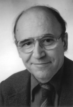

Please note: the AAS Obituaries are temporarily being hosted on this website while their full content is being ingested into the PubPub publishing platform newly adopted by the Bulletin of the American Astronomical Society. When the migration is complete, your existing links will take you to the final, migrated content. Contact peter.williams@aas.org with any questions.
Norman Hodgson Baker Jr. (1931-2005)
Norman H. Baker, a key contributor to the foundation of modern stellar pulsation theory and former editor of the "Astronomical Journal", died on 11 October 2005 in Watertown, New York near his beloved summer home in Natural Bridge. He succumbed to complications of Waldenstrom's macroglobulinemia, a bone marrow lymphoma that he had successfully surmounted for twenty-two years.
Norm, as he was known to all, was born 23 October 1931 in Fergus Falls, Minnesota to Norman Hodgson and Jeannette (née Lieber) Baker. He attended the University of Minnesota where he met the first of many lifelong astronomical friends, Bill Erickson. He received his BA in 1952. He went on to do his PhD, "Radiation from Particle Interactions which Create Current," at Cornell University under Phil Morrison. He then moved to a postdoctoral position at the Max Planck Institut für Physik und Astrophysik in München with the intent of pursuing his work in plasma physics with Ludwig Biermann and Arnulf Schlüter. However, Rudolf (Rudi) Kippenhan snatched him away to pursue what became his lifelong interest, stellar physics. This was the dawn of the era in which electronic computers were becoming practical for scientific calculations, and Norm immediately adopted this new tool. Indeed, he remained at the forefront of computing technology throughout his life: He was certainly the first member of the Astronomy Department at Columbia to buy a Mac, and was undoubtedly one of the few emeritus professors in the world known by all the administrative staff as the first person to turn to when stumped by a computer problem.
Following his first paper with Kippenhan on stellar rotation, Norm turned his attention to stellar pulsations, a topic he would pursue throughout his career. His 1962 paper in "Zeitschrift für Astrophysik" on pulsational models of Cepheids (Baker and Kippenhan 1962, 54, 155) is a classic in the field. The first figure displays the three dimensional model of the atmospheric absorption coefficient as a function of log P and log T. Sophisticated three-dimensional computer images being many years in the future, it was contructed from a folded and bent sheet of grid paper which was subsequently photographed. Using extensive numerical analysis, the paper showed that stars in the δ Cephei region of the H-R diagram were ``pulsationally unstable due to the destabilizing effect of the He+ region.'' This paper, along with those of Zhevakin, Cox, and Christy, established our modern understanding of pulsational instability in horizontal branch stars. His second paper with Kippenhan the following year brought convection into the problem; this topic became another lifelong theme of Norm's research that he subsequently pursued with Douglas Gough. His most cited work, carried out a decade later with van Albada, was an attempt to understand the properties of horizontal branch stars. It synthesized for the first time stellar evolution theory and the insights gained from studies of stellar pulsations.
Between 1961 and 1965, Norm held no fewer than five positions. After a year on the west coast at the Convair Science Research Lab in San Diego, he landed in the New York area to pursue pulsations, oscillating among the Goddard Institute for Space Studies, the Institute for Advanced Study in Princeton, Yale, and New York University. In 1965, he was hired as an Assistant Professor in the Department of Astronomy at Columbia University by Lo Woltjer, and remained at Columbia until he retired in 2003. As a teacher, he was deeply appreciated by undergraduate and graduate students alike for lectures that were models of clarity, for his out-of-class assistance which was generous and unstinting, and for incorporating into his courses modern numerical techniques which served the students well throughout their careers.
In 1975 when Woltjer returned to Europe, Norm took over the editorship of the "Astronomical Journal", a position he held (shared in the last few years with Leon Lucy) for a decade. His scrupulous integrity and forthright honesty served him, and the Society, well. Despite his scathing intolerance for administrative stupidity, he also managed to complete successfully a term as Chair of the Department of Astronomy. (This author, who currently holds the Chair and shares the intolerance, has yet to fathom the gracious equanimity Norm displayed.)
His early interest in brewing beer during graduate school at Cornell (where he co-founded the Old Undershirt Brewing Company) was transformed in later life into an expertise in German wines. The precision that marked his research extended to every aspect of his private life. I had the distinct pleasure of subletting his apartment during my first year on the faculty at Columbia while he was on leave in Europe. We spent most of the year trying to imagine how we could ever restore it to the state of perfect organization in which we found it.
Norm is survived by his wife and constant companion of thirty years, psychiatrist Doris Blum Nagel, by his sister Dr. Jean Trousdale, and brother Dr. Richard C. Baker, two nieces, three nephews, and by several generations of undergraduates, graduate students, postdocs, and colleagues who hold fond memories of his patience, kindness, humor, and quiet "joie de vivre".
Obituary written by: David J. Helfand (Columbia University)
BAAS Citation: BAAS, 2005, 37, 1546
SAO/NASA ADS Bibcode: 2005BAAS...37.1546H